13–16 декабря 2018
Харьков, Украина
Мастерская Волшебства Альтаир — Скандинавские Боги
Документально подтверждённая историческая запись. Фото не добавлено: соответствующий этому событию набор не подтверждён.
Архивная запись · 13–16 декабря 2018
PsiTrends · документальная история групповой работы
Мастерские, ретриты и групповая практика
2006 → 2018: документальные записи
Визуальный архив мастерских, ретритов, учебных программ и групповой практики в разных странах и традициях.
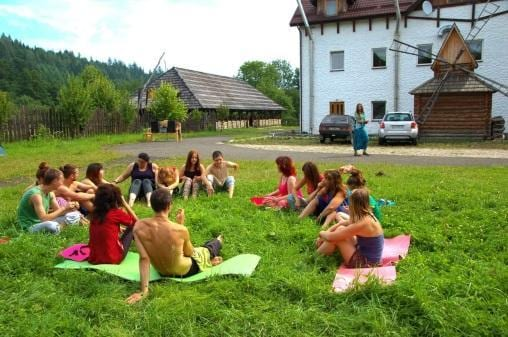
2018 → 2006
13–16 декабря 2018
Харьков, Украина
Документально подтверждённая историческая запись. Фото не добавлено: соответствующий этому событию набор не подтверждён.
Архивная запись · 13–16 декабря 2018
27–29 июля и 29 июля – 3 августа 2018
Радомышль, Украина
Историческая методология мастерской и практический формат. Сохранившаяся брошюра описывает исследование бизнес-проектов, символическую и энергетическую работу, египетские мистериальные темы и ритуальные элементы; это не прогнозирование и не гарантия результата.
Архивная запись · 27–29 июля и 29 июля – 3 августа 2018
2017
Карпаты
Документальное продолжение карпатской серии мастерских.
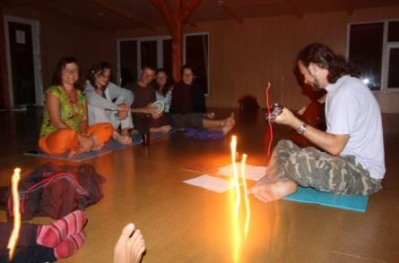
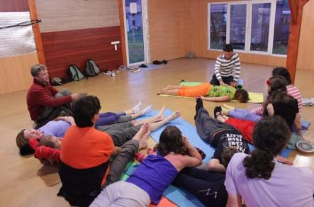
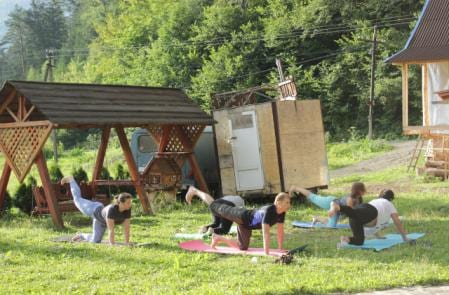
2016
Карпаты
Документально подтверждённая Мастерская Волшебства в Карпатах.
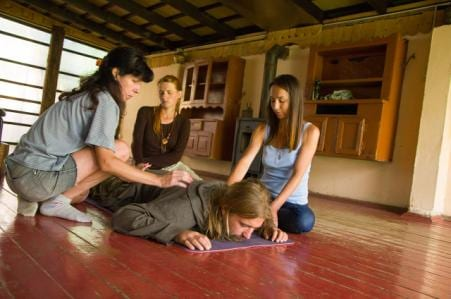
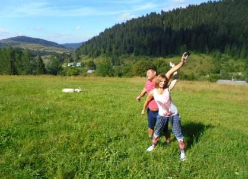
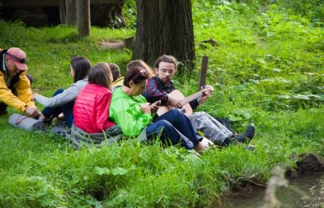
2016
Одесса, Украина
Сдержанно описанная архивная запись, подтверждённая историческими пляжными и групповыми фотографиями.
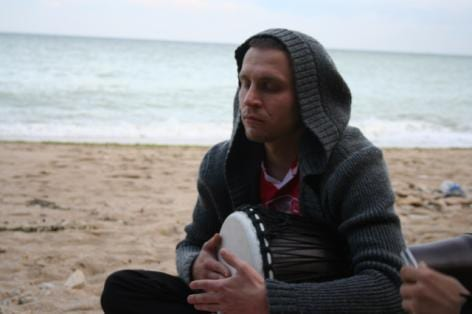
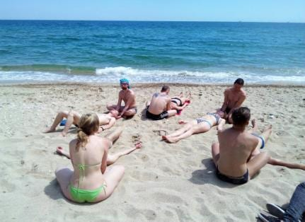
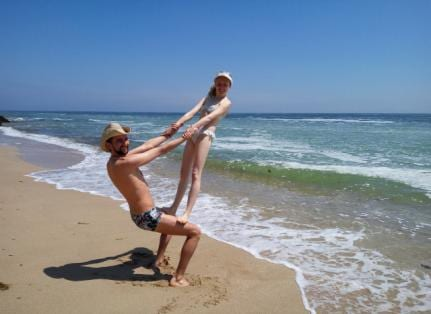
3–10 августа 2014
Карпаты, Поляница, Скалы Довбуша
Документально подтверждённая Мастерская 2014 года с темой Путешествия по Мирам Древа Иггдрасиль и архивной серией из семи фото.
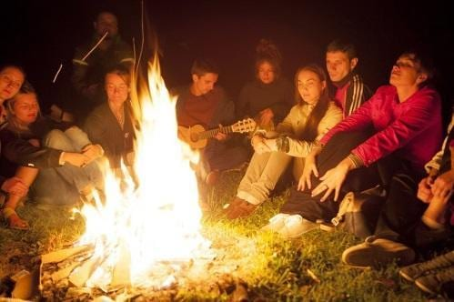
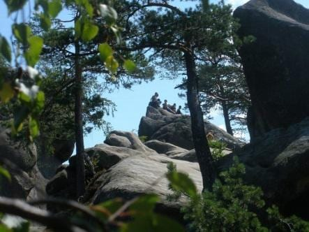
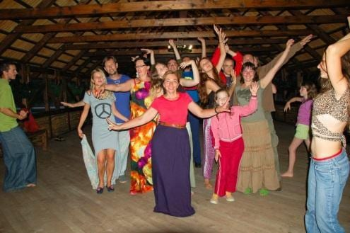
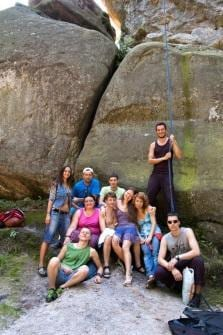
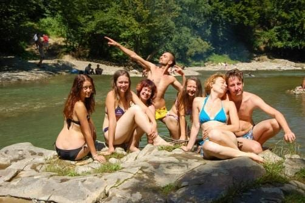
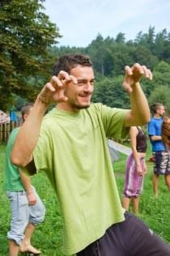
3–13 августа 2013
Ласпи / Форос, Южный берег Крыма
В исходной программе указаны расстановки, арт- и танцевальные практики, телесная работа, практики со стихиями, рунами и Таро, шаманские практики и индивидуальные запросы. 14–15 августа были заявлены индивидуальные практики.
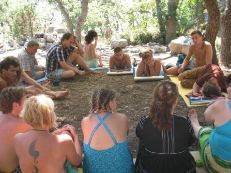
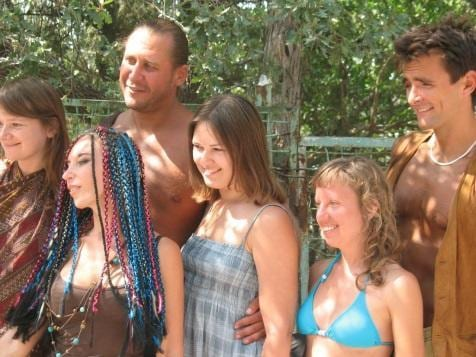
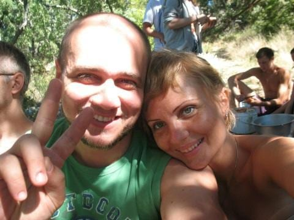
18–20 мая 2013
Киев / Пуща-Водица, Украина
Сохранившаяся программа фиксирует открытые семинары, индивидуальные консультации, групповую работу на природе и на территории базы. Исторические термины переданы как язык программы, а не как медицинское утверждение.
Архивная запись · 18–20 мая 2013
2012
Крым
Летняя выездная Мастерская Волшебства. В программе 2013 года есть отсылка к впечатлениям участников августа 2012 года.
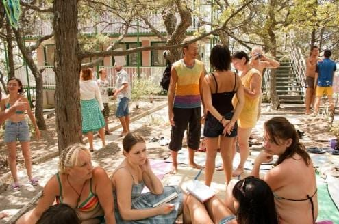
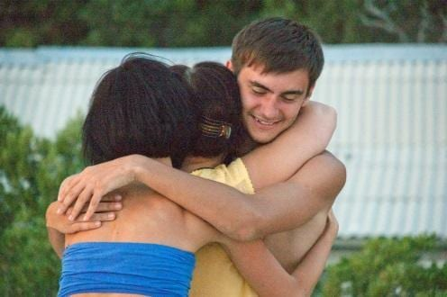
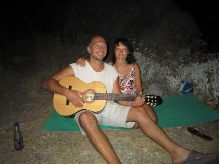
6–8 мая 2012
Киев, Украина
Документально подтверждённая запись конференции. Подходящий фотоархив для неё не установлен и здесь не показывается.
Архивная запись · 6–8 мая 2012
2011
Крым
Архив фиксирует развитие серии в формат Мастерской Волшебства.
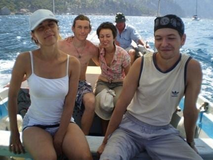
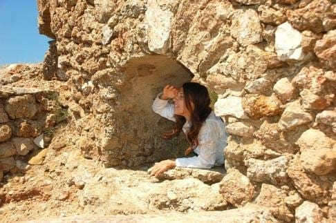
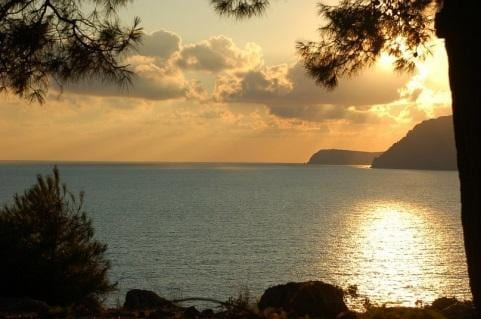
2009
Крым
Следующая ежегодная мастерская раннего периода работы с тренерами и ведущими.
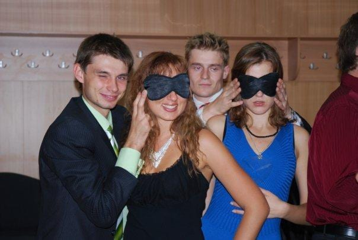
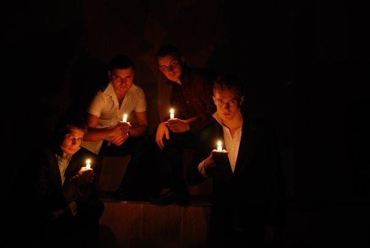
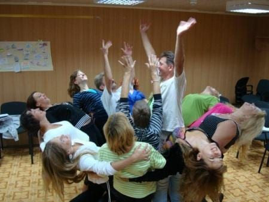
2008
Крым
Выездной групповой формат, зафиксированный в историческом архиве.
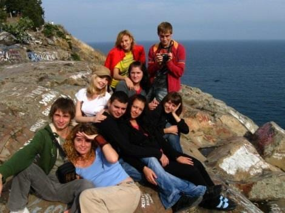
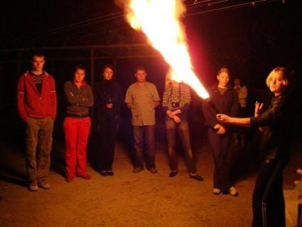
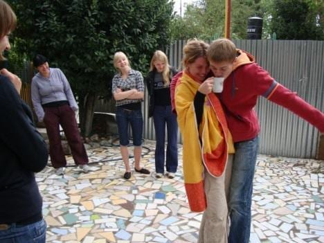
2007
Крым
Документальное продолжение ранней серии Мастерских Тренеров.
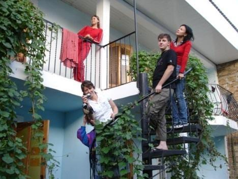
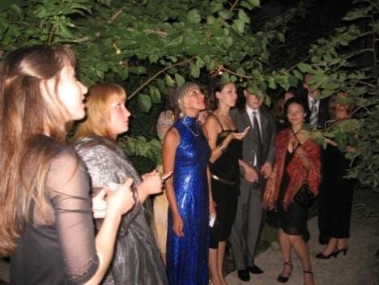
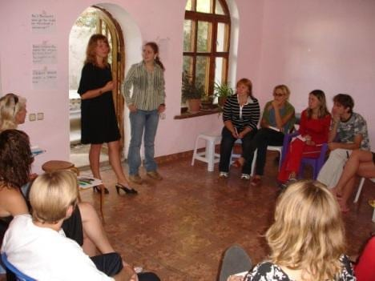
2006
Харьков, Украина
Ранний этап обучения и групповой работы для тренеров и ведущих. Брошюра 2018 года называет его началом регулярной серии Мастерских.
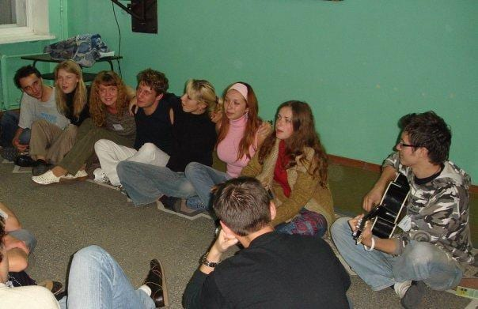
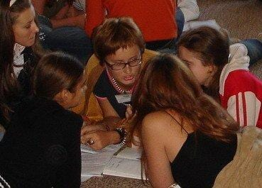
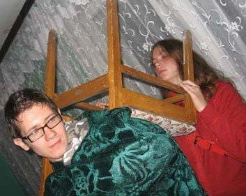
Контакты
Начните с короткого сообщения. Обсудите свой вопрос, формат — Торонто или онлайн — и уместность сессии. Стоимость и время согласовываются до записи.